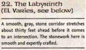
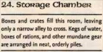

Week 9 - Beshadowed labyrinth. Birds and beasts.
Short session this week. I was a bit unwell - still am - and there's not much to tell, story-wise.
The party negotiated the Maze of The Shadow - a maze populated with kenku rogues armed with bows and under a continual Darkness effect. Regrettably, I completely, completely stuffed up the tactics. I mean utterly. Partly from being ill, partly from it being a difficult encounter to run, and partly sheer inexperience.
A kenku would move into view and shoot at the party. It would be within 30' in order to make a sneak attack. On their turn the party (of course) would move over to the kenku and clobber it. Duh. What I should have done is …text deleted - email me if you are a DM and want to know….
So next time that the party are in this situation, they will have a much rougher time of it I assure you. It wasn't all bad, however. The weasels gave Frith some unpleasant moments and that was cool. They latch on, you know, and do constitution damage.
Oh well. The party will definitely die next week.